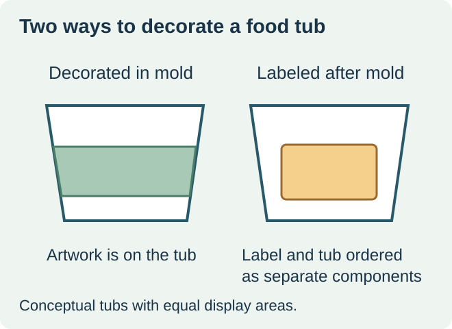
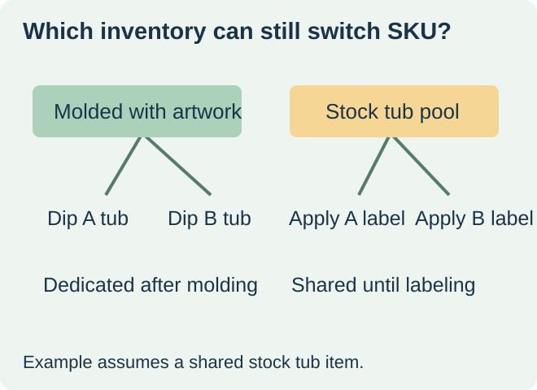

Compare a delivered in-mold decorated tub with the full cost of a stock tub plus a label applied after molding. Ask the molder to quote the decorated component against the exact tub and artwork revision. Ask the label converter to quote the separate pressure-sensitive label against the stock tub. This puts both bids on a common unit: a usable decorated tub at the agreed delivery or packing point.


In injection in-mold labeling, a label is placed in the mold and becomes integrated into the molded part during formation. The artwork release therefore belongs in the molded-tub order and trial. The In-Mold Decorating Association describes this injection process, including label insertion and molding, and identifies food tubs and lids as examples. Injection in-mold labeling basics
Identify which stock stays generic
Imagine two dips using the same stock tub but different graphics. With separate labels, unused bare tubs can serve either flavor if the container specification is shared and the packer can apply the right labels. With flavor-specific in-mold decoration, each molded tub already carries its flavor identity. Ask how both bidders would handle a late copy correction, a slow-moving flavor or a second production run. The quantity of generic lids may differ from the quantity of decorated tub bodies, so compare the actual set.
| Cost or risk | In-mold decorated tub | Stock tub plus adhesive label |
|---|---|---|
| Order unit | Finished tub with named artwork and mold revision | Bare tub, label and the work to assemble them |
| Change point | Confirm latest artwork acceptance before molding and decorated stock already committed | Confirm latest label release and stock already printed or applied |
| Approval sample | Molded and decorated tub matching the quoted setup | Production-representative label applied to the actual tub |
| Comparable quantity | Usable tub bodies and matching lids by artwork | Usable tub bodies, lids and labels available for the same runs |


Compare the first usable packed unit
Include tooling, one-time artwork or setup charges, freight, minimums by version, application labor or equipment time, and agreed losses where they belong in the quote. Add warehousing or disposal exposure only when the buyer can define it. Price the same quantities and delivery terms. A discounted large order can still tie up more flavor-specific stock than the next fill plan requires.
Ask each supplier for the right sample
The in-mold trial should resolve decoration placement and appearance on a molded item, together with any relevant stacking, lid fit, and handling requirements. Obtain the molder’s drawing and design restrictions for the exact part. Sonoco’s in-mold container documentation provides an example of the finished decorated component a buyer can request from a molder. Sonoco’s in-mold container overview
On the adhesive route, test the label on the stock tub at the proposed packing stage and check the printed area on a filled unit. Keep separate acceptance records for print, application and container fit. The ZFU inquiry below is for the adhesive-label option. Confirm in-mold supply with the chosen tub molder.
Discuss the unresolved label requirement
For the adhesive-label route, send a stock tub and lid drawing or sample, panel dimensions, surface material, intended finish, versions and quantities, and the application conditions. Ask the tub molder to quote in-mold decoration as a separate finished-container option. Review food label options and prepare a label specification inquiry. The contact page opens an email draft and lists email or WhatsApp for attachments. Supply, proof options, testing, pricing and timing require project confirmation.